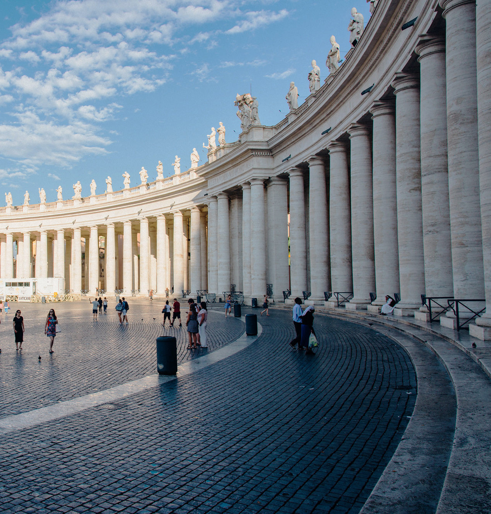
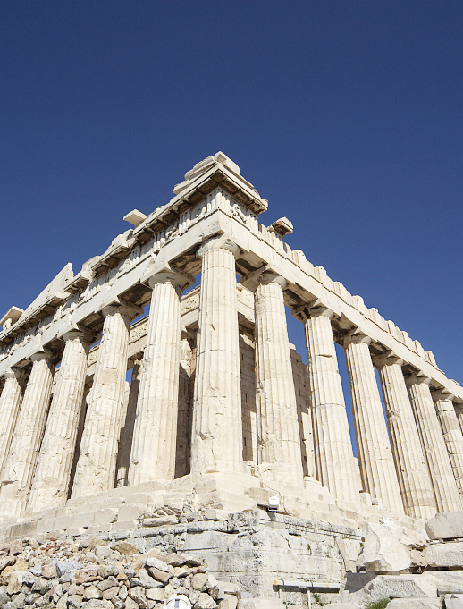
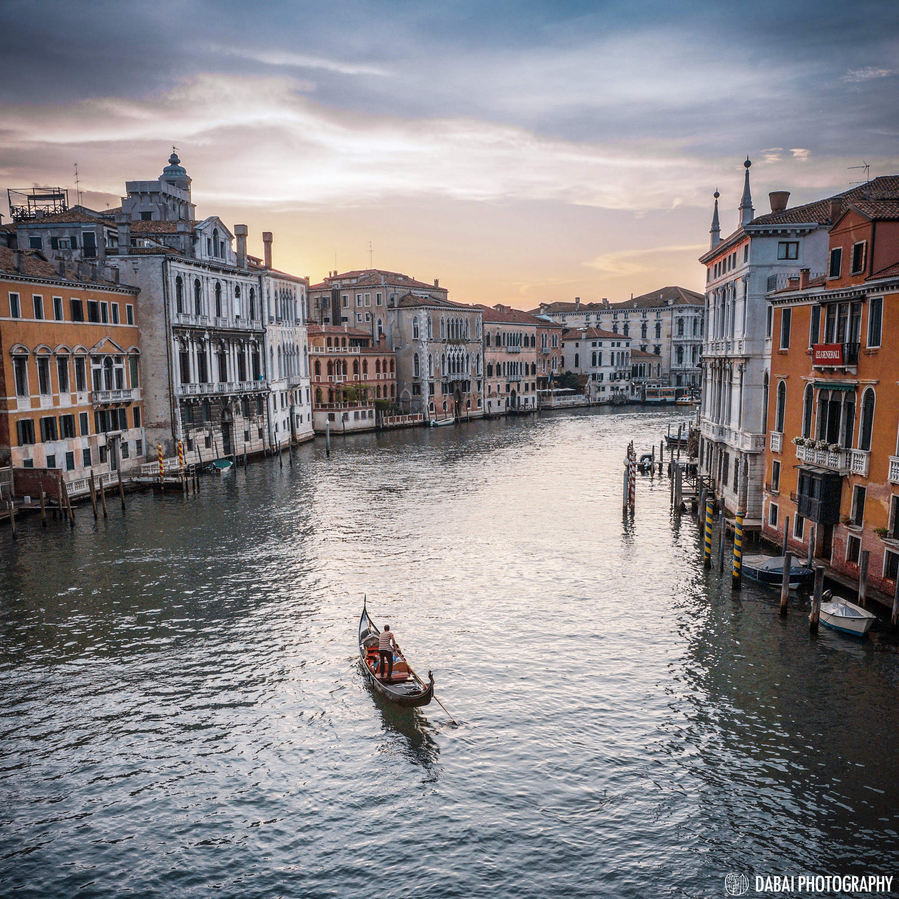

首页
首页 建筑
建筑 人文
人文 历史
历史 现代
现代
READ MORE
巴洛克建筑、法国古典主义建筑、哥特式建筑、古罗马建筑、浪漫主义建筑、罗曼建筑、洛克克风格、文艺复兴建筑。
-

雅典建筑
雅典是希腊共和国的首都和最大的城市，其建筑背后是古希腊的建筑风格。
古代希腊是欧洲文化的发源地，古希腊建筑是欧洲建筑的先河。古希腊的发展时期大致为公元前8～前1世纪，即到希腊被罗马兼并为止。 古希腊建筑的结构属梁柱体系，早期主要建筑都用石料。墙体也用石砌块垒成，砌块平整精细，砌缝严密，不用胶结材料。虽然古希腊建筑形式变化较少，内部空间封闭简单，但后世许多流派的建筑师，都从古希腊建筑中得到借鉴。 -

圣马可广场
圣马可广场既是威尼斯市的中心，也是游人集中之处。广场号称是世界最大的无顶大理石客厅，四周遍布高档商店和著名咖啡馆。广场一侧是威尼斯共和国总督府，是国家光荣与权力的象征，始建于12世纪，外部装饰华贵，全部采用红白相间的大理石镶嵌墙面。广场上成千上万的和平鸽穿梭在人群中间，不时地在游人头顶盘旋飞翔，只要你手拿一点粮食，它便会亲热的停在你的肩上或手中，抢着啄食。在这里人与鸽子亲密无间，人与大自然相处和谐，孩子们更是兴高采烈，与鸽友逗乐无穷。
-

帕特农神庙
神庙算的上是最普遍而且为人所知的希腊公共建筑。但神庙的功能和现今的教堂不同，祭坛通常就直接设在神庙后方的户外。
神庙就像个储藏室一样，放置著许多和求神问卜有关的宝物还有例如雕像、头盔和武器这些的祈愿物。而神庙内的房间内殿则主要当作保险库或是储藏库，通常沿着列柱排列。 -

贡多拉
威尼斯河面交通，全靠木制小舟。轻巧别致的舟身两头高高翘起，像一弯亏月划破水面，缓慢的向前摇去，漆成黑色的舟身，擦洗得精光明亮，舟弦之上镶嵌一条铜边，擦得闪闪发光，舟中放着两张靠背椅，套上丝绒椅套，游客可以相对而坐，观景谈心，这种水都独特的别有风趣的小舟，本地人称谓“贡多拉”（Gondola）。